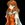

|

Crescent Pulsar
Author of 2 Stories |
Author's note (you can skip this since it is VERY long, or come back to it after you read the
story below): First of all, if you're interested in the reason for me taking so long in posting
this, then read my excuse at the end. Also, I did a little bit of revising on the first part. You
see, I got Ranma 1/2 graphic novel #26 in the mail the day after I posted part one, and I've
been under the impression by MANY authors that Ranma disappears while cloaking himself
with a cloth using a technique from the umisen-ken. But he doesn't disappear! What's up
with that?
So, I had a quick solution that suited the situation better. It's not really worth reading the
whole part again for, so I'll be mentioning the technique "Dark side of the moon" uses to
disappear somewhere in the second chapter. If you feel like finding that part I changed, then
by all means do. Just use this key word to get there: umisen-ken.
Oh, and I also gave an explanation for why Ranma chose to go to her place of residence, in
response to one of my reviewers. I try my best to explain the character's actions and
responses, so I couldn't pass it up after a lack of such was pointed out. .
I also cleaned up the scene with Ranma's guardian, since I read over it and had a hard time
understanding what I had written. .; It's clarified now, and the guardian actually makes it
clear as to how she is Ranma (or a part of, anyway).
Anyway, I'm surprised I had positive responses to this. I know there are alot of old,
overused plot devices and elements in this, but I needed to use them in order to get the
story in the direction I need. The whole purpose of writing this story isn't about plot,
anyway: it's about making Ranma an important member of the Sailor moon series without
changing the pre-existing history of it. I'd be giving too much away if I said more, so just
wait until I reveal Ranma's role in future chapters, okay?
And now I'd like to respond to these sixteen reviews...
I appreciate the feedback very much, but please don't allow the part about Ranma being a
senshi or a girl spoil the story for you because they're only devices that are needed to
complete and make the plot fully functional. I know how some people are about these
things, so I can only hope you can enjoy the story for why it's written and not how it gets
accomplished. I've spent a great deal of time putting this thing together, and you'll
understand once you find the first chapter fifty-thousand words long.
At any rate, if you stick with me as I write, you'll find that there's more to this story than
Ranma being a senshi and all that. My main focus is character development, mind you; not
wish fulfillment: I wasn't going to just write this because I decided to have a senshi inspired
by one of my most favorite rock bands, so I came up with ideas to support and otherwise
overwhelm the reason this story is being written. This could have just been a Sailor Moon
story, but that wouldn't have been fun or hard to do.
And as far as being too descriptive, I find that racing through events without giving much
detail doesn't really give anyone a chance to imagine much of anything by the time
something else happens. I mean, we all know what Ranma looks like as a girl, but I only did a
general comparison with her guardian to describe her appearance, and I'm sure there was
plenty left for the imagination to picture her as they see her in their mind's eye without me
changing what's already there.
I went all-out describing Ranma's senshi uniform because hers is different, and you needed
to know those differences. Sure, you may know what all the other senshi's outfits look like,
but they all have something that distinguishes them from one another; and I'm not talking
about their colors (though you did need to know that Ranma's colors were different than the
others, as well). I wanted to make a distinction between Ranma and the others' uniforms, and
that Ranma wasn't sailor moon, and wasn't going to replace sailor moon.
Also, I want to give my story an environment. I don't want to just write how "Ranma ran
from the front door to the guest room." Can you really enjoy picturing that by the time
"Ranma enters and takes a nap?" No; I want Ranma to "dash up the stairs, round into the
hallway, and stop abruptly at the door to the guest room to open it." Then, I want him to
"toss his backpack aside, strip to his undershirt and boxers, lay out his futon, and then lay
upon it and take a nap after a trying day at school." I may be going into detail, but it makes
your imagination work more efficiently than you think. Did you really see everything I wrote
when comparing the first example with the second? If so, then you must be one of the few
who take their time to do all the extra work: which only means I'm not doing my job as a
writer by making readers add necessary information themselves.
That's the difference between stories for children and stories for young adults upward: what
children's stories lack in detail, compensate by using pictures; and stories for the elder
population that lack pictures, compensate for it with details. . For the most part, anyway:
there are always exceptions.
At any rate, your imagination is how you interpret my words in this case. The more
descriptive I am, the more your imagination works; it's as simple as that.
Finally, who Ranma ends up with is still up in the air, so don't think Akane's out of the
equation. I DO have someone for Ranma, but that'll be revealed much later... Until then,
Ranma CAN be in a serious relationship with someone else during the time frame most of
this story takes place.
So, before I go too far along in the story and decide who Ranma ends up with, send me your
suggestions; though be mindful that Ranma still considers herself a guy: in the sense that
she doesn't conform to the role of a woman (so Ranma doesn't have a sudden interest in
men or anything like that).
You can suggest anyone, really; but do give a brief reason as to why. I don't care if the
character is currently out of the picture, across the ocean, on another planet, or would never
find themselves interested in Ranma; just suggest them and I'll see what I can do. I will admit
that I'll favor the odd, seemingly-impossible and outlandish ones, however.
As for Akane not being Ranma's partner, she only wanted Ranma to lose against Ryoga so
Ranma would be humiliated and perhaps even part with some of that overinflated ego of his.
Sure, Akane usually DOES want Ranma to win, but Ryoga is an exception since she thinks
that Ranma picks on him all the time. Makes sense, no?
Maybe I should reply to the reviews IN the reviews... .;
Well, I hope you will enjoy this story, but I'm not very confident about my success in doing
so. I'll just have to wait and see what happens.
Now, enjoy the story! (I hope!)
Dark side of the moon
By: Crescent Pulsar
-
Closing the door behind her quickly though silently upon entering the bathroom, Ranma
rushed over to the mirror above the sink to get a better look at her hair. Turning her head
aside as she gazed at her reflection from askance, she once again pulled her hair over her
shoulder; only this time she could see it from a better perspective.
A better perspective than she thought, perhaps. The person reflected in the mirror was her,
yet it was not. Nothing had changed (except for the fact that her hair was longer and was
lengthening before her eyes), but something told her that she had, indeed, changed. Then,
she realized, it didn't concern her body. No; it was her clothing that was amiss: not because
they were damaged beyond repair, but rather for the reason of being different from... normal.
Normal? But weren't her current attire normal? Of course they were! However, a memory of
seeing herself in other clothing reflected from a polished metal surface told her that she
WAS wearing different clothes. In fact, everything she owned was different from her tunics,
robes, sandals and animal skins.
Wide-eyed, Ranma stared at herself in the mirror, wondering where all these strange
thoughts were coming from. "Whuh... What's happening to me...?" She whispered, her heart
picking up its pace as fear found a home inside it.
-
Chapter one - Part two: Consequences
Ranma was soon stripping herself of her clothing and tossing them into the trash (except for
her boxers, which found themselves in the hamper since they were in good repair).
Afterwards, she entered the furoba and gathered the necessary supplies for her ablutions:
stool, bucket, washbasin, soap and sponge. There were already two towels on the rack, so
she didn't have to get one (just replace the one she used after she was done).
Sitting on the stool, she refrained from looking at her reflection in the large mirror over the
faucets as she filled her bucket with cold water. She didn't want to admit it, but she was, as
best as she could tell, disconcerted over the recent course of events. And who wouldn't be,
after seeing and knowing things in your mind that you knew were not yours?
However, as she progressed through the cleansing of her body, she soon calmed down and
came to the conclusion that it was somehow due to her being a senshi. Her guardian had
mentioned something about unlocking memories... Maybe that is what she had done, by
accepting her heritage? She wasn't sure, but that was the best explanation she could come
up with.
After she finished washing her body, she then concentrated on her longer hair, having
saved it for last since she didn't know what to do with it yet. Already she could tell that it
had grown whilst she attended to her body, and that her hair looked ridiculous plaited so
loosely while wet. So, deciding that she, at least, had to clean her hair, she freed her fiery
tresses of the string which bound them and began to administer more shampoo than she'd
ever had to use before.
It was while she rinsed her hair of the shampoo that an odd thought occurred to her: why
cut her hair back to its original length? How many years would it have taken for anyone to
acquire such length, normally? Three years or so? Four? Past memories told her of how hard
it was, caring and waiting patiently for her hair to grow to the length she desired, and how
proud she was once she finally met that goal. These were not Ranma's memories, but she
could understand, and was soon considering leaving her hair as long as it would grow
(which she knew would be at the base of her bottom).
Reluctantly, she stood up and faced the mirror, seeing herself with long, wet, (and for the
moment) clinging hair. It almost seemed like she had blood coursing down her body. Of
course, she saw more than her hair in the mirror: she also saw the curves of a young woman,
that her hair made more pronounced as it cascaded down and over her torso, highlighting
her slim shoulders and fragile clavicles, and accentuating her bountiful bosom, slight waist,
and perfect, child-bearing hips (that's what doctor Tofu's mother said, anyway).
Tearing her attention away from the mirror, her body shuddering, she opted to get into the
hot waters of the furo as soon as possible. Her past self had seen the same image in her
mirror of polished silver on many occasions, and it frightened her to find herself just as
proud about the woman she had seen. Sure, maybe it never bothered her before, but to
know that a real girl regarded her body in much the same way as she did, was unsettling to
say the least. She just hoped it wasn't an effect from being cursed, and was instead natural;
THAT she could handle.
Being female in hot water, however, was not something she could handle; and that's the
exact situation she found herself in. She sat there, unmoving, the water lapping over the
swells of her breasts after her entrance into the previously-calm waters of the furo, and
resolved to not cry out as she had done the previous times. Okay, maybe she had been
extremely sensitive to the warmer scale of water temperature the first time due to being
inflicted by the full-body cat tongue, but she couldn't excuse the second.
Soon, her body trembled, as frustration, sadness, anger, helplessness and loss welled up
within her being. Tears gathered at the corners of her eyes, knowing that the third time was
going to be the charm (if one could call it that in this circumstance). And, before long, she
buried her face into her hands and wept. She may not be the smartest banana of the bunch,
but she knew, deep down, that her choice had not only made her a senshi, but a female, also.
"What have I ever done to deserve this?" She wondered amidst her sobs. "Why me?"
Unbeknownst to Ranma, there was one, unsuspecting, sympathetic ear on the opposite side
of the shouji that separated the bathroom from the furoba. Well, there were two ears, but
they both, nonetheless, belonged to Nabiki.
Nabiki, of course, had a camera in her hand. Why else would she be at her current location,
after learning that Ranma had returned and was taking a bath? It was the best opportunity to
take pictures of a naked Ranma, who'd usually be too exhausted and sore after a fight with
Ryoga to notice her presence.
But she never expected to bear witness to this, nor did she plan to take advantage of it. She
wasn't that cruel, you know; far from it, in fact. She could almost empathize with Ranma,
watching as she cried over the loss of a loved one. Although, could anyone ever lose
someone more important than themselves?
That ultimately depended on the individual, didn't it? How would she feel, if she had become
a man without a way of knowing how to regain her real body, her female body? She'd like to
think that she'd be calm and accepting, but knew better: she'd be devastated. And she knew
that that was one among many feelings that her sister's fiance was feeling at the moment.
How does she know Ranma's condition, you ask? She doesn't. However, she knows very
well that Ranma wouldn't cry over being stuck as a female if it were reversible. Now that the
springs at Jusenkyo were flooded and, consequently, mixed, she knew that Ranma knew of
no other way to become male unless her curse was locked by the chiisuiton. If her curse
were made permanent any other way, then there was no chance of being male again unless
there was a known counter to it. It seems that, to Ranma, there wasn't.
At any rate, she could very well take a few pictures of this moment. There were countless
people, both inside and out of school, that would enjoy seeing the confident, macho Ranma
broken down like SHE was in all HER naked glory. Just copies of a single picture from this
very scene would, in a day, bring in enough profit as she usually made off Ranma, on
average, in a month's time.
One depressed button, and a click later, and she did, indeed, have that single photograph.
Tendrils of red floated about her in the now-warm recesses of the water, the larger ones
slithering about beneath the water level and along the bed of the furo, while the smaller ones
wafted over and just below the surface. Sniffling, Ranma didn't know how much time elapsed
as she cried, but knew that her hair was as long as it would get by then.
The sight of it floating about her had a strange, mollifying effect that she couldn't explain.
She supposed that it could be the gentle movements of her tresses as they wavered so
calmly around her, but the thought that the water could have been filled with her blood
instead of her crimson hair was just as possible a cause. However, the thought of giving up
wasn't even present for consideration.
That didn't mean she knew what to do, however. She wondered, though, as she stared
down at her reflection on the water's surface, sometimes focusing on her hair and legs
beneath it. Being a girl for the rest of her life was such a drastic change. Hardly anyone ever
considered it, but Ranma had, throughout her time being cursed, learned that changing your
sexual role was so life-altering that surely nothing else could compare. It wasn't just your
outlook that changed, but how others saw you, how they treated you, and how you
respond to said treatment. Also, there was what society expected of you, as well as what the
nature of your being imposed.
To put it simply: Ranma did not want to live the life of a woman. She had nothing against the
other half of the human race, but she did not find the limitations they had in society, as well
as their role in reproduction, appealing. If the world were more like life in the Amazon village
of yore (and she suspected that it hadn't changed), then she wouldn't have nearly as many
qualms as she presently did.
Blinking, she realized that she had lived her past life as an Amazon. Laws that she never
knew about, she now knew; and the ones she had already known, now made more sense.
Quite uncharacteristically, she, in surprise, murmured: "Oh, my..." And, idly, she wondered
how the old ghoul would react to her being an Amazon.
Surprisingly, being an Amazon actually appealed to her, now that she knew more about their
culture and history. And why shouldn't it, knowing she would fit in almost seamlessly with
that lifestyle? (Which she preferred over being a housewife that had no adventure at all.)
What place did she have with her family, with the Tendo's, now that she was a girl, anyway?
"No place..." She concluded, her mental voice dismal. Being a girl, she couldn't marry a
Tendo, couldn't produce an heir, and couldn't be her mother's manly son. Worst of all, she
had no chance of having a relationship with Akane anymore. Sure, she was against the
whole marriage arrangement, but something about Akane always interested her (though
she'd never admit it). She didn't know how Akane appealed to her, so she was always too
confused or uncertain to make any real progress in their status as an engaged couple. (Well,
they were engaged, alright: engaged in fights and arguments.)
It wasn't going to do any good weighing on her problems, so she sighed and slowly raised
herself out of the water, her hair clinging further down her body as she did so. Stepping
onto the tiled floor of the furoba, she once more gazed at her reflection in the mirror, and
soon confronted it and the image it held. Trailing her fingers across its cool surface,
appearing so slender and delicate on either side, she finally took the courage to admit that
the body she saw in the mirror was really her own.
For so long she had ignored her female body, acting as though it didn't exist in some
instances. Why be a girl, when you were born a guy? That seemed logical enough... for a
while. But she had to admit that there were countless things that she had learned that she
otherwise wouldn't have learned if she weren't a girl (including most of her most powerful
techniques and skills), and for that she was grateful. There were other benefits worth
mentioning, but now wasn't the time to: moving on with HER life was more important. But
what to do; where to go?
She had no clue, but she was determined to walk the path that now lie ahead of her. Where it
would take her, well, she'd just have to find out. It wouldn't be easy, she knew, but did she
really have any other choice?
Retrieving a towel from the rack, she began to dry herself by patting around methodically,
having learned a long time ago that it didn't feel pleasant rubbing herself as rough as she
could as a guy. Far from being done, a problem arose: her hair was reintroducing water to
her skin. Seeing the second towel on the rack (no doubt there for everyone but her father),
she took it and wrapped up her hair with it, getting it out of the way for the time being.
After she wrapped the one towel around her torso, satisfied that she was adequately dry,
she released her hair from its confines and it all, in one damp mass, fell heavily against her
back (most of it covered by her towel). Pondering what to do with it, she decided to leave it
braided as usual. Was it just a coincidence that she braided her hair in the past, too?
Somehow, she doubted it: never had she cared for her hair before getting cursed; and after
getting the dragon whisker, braiding it just seemed like a good idea (even though she could
have kept her hair tied up in a ponytail).
Making good use of new memories, she dried her hair carefully with the second towel,
taking precautions to prevent snarls. Once through, she picked up her hair tie from the floor
and bound her hair with it after she was through plaiting it. Looking at herself in the mirror,
her braid falling over her shoulder, she had to admit that she liked how she looked as she
caressed her hand down the length of the vermillion rope that had once been her pigtail.
Shaking her head to clear her mind of such trivial thoughts, she faced the shouji, took a
deep breath, and marched toward whatever fate had in store for her beyond it, the towel that
she had used for her hair folded over one arm. Upon opening it, she quickly noticed the
unexpected sight of another person in the bathroom with her: Nabiki.
Nabiki was leaning against the bathroom door, appearing smug, and making any
conventional means of escape impossible. But what really caught her attention, was the
familiar polaroid-type picture she held, in a hand that dangled from her loosely-crossed
arms. Involuntarily, she gulped, very much alarmed by what she saw at the beginning of her
new path. And, so, she stood, paralyzed by the dread that overcame her.
However, she did manage to stammer out: "Nuh... N-Nabiki...?" Surprised, she placed her
free hand at the base of her throat, having heard a different, decidedly feminine voice
emanating from it. Her voice; it sounded just like her guardian's!
"Seems that more than just your hair has changed." Nabiki commented calmly, showing a
part of her hand (not her literal one) so Ranma had a clue about her advantage in their
confrontation.
Not about to be intimidated by Nabiki, Ranma gathered her resolve and stood erect, firm,
clearly conveying defiance from her stance and facial expression. It was a pity that her voice
quavered ever-so-slightly as she spoke, ruining the effect. "What do you want, Nabiki?"
Shaking her head slightly, tsking as she did so, Nabiki regarded the now-long-haired
redhead with a smirk before asking: "Oh? It isn't obvious?"
"Stop playin' around!" Ranma demanded, her already-frazzled nerves making it easier for her
to become angry and to lose her composure. Calming down before continuing, though her
voice remained stern and agitated, she suggested: "Just get to the point."
Removing all expression from her face, Nabiki unfolded her arms and raised the front of the
picture she held into view. Almost immediately that feeling of dread returned to the forefront
of Ranma's emotions at seeing a picture of herself crying into her hands in the furo, as she
had been doing just moments ago.
Alternating her gaze between Nabiki's blank visage and the picture she held, Ranma
contemplated taking the latter away. However, she soon realized that Nabiki wouldn't be
stupid enough to practically hand her a picture without having copies already made and
hidden somewhere. So, losing much of her confidence in the face of a lost battle, her posture
slouched and her facade crestfallen, she knew how this meeting was going to proceed:
Nabiki was going to hold the picture over her head until she did whatever Nabiki wanted her
to do, until satisfied.
Knowing what was going to happen due to past experience, she somberly asked: "So...
What is it this time?"
"Oh, I don't know." Nabiki replied nonchalantly, seeming to consider her options. "Who
says I need to use you?"
Regarding Nabiki questioningly, events not playing out as they normally did, Ranma
inquired: "What do you mean?"
Nabiki smirked as she waved the picture she held back and forth, doing the latter to attract
Ranma's attention to it. "What could you do for me that is equal to the value of this?" She
asked rhetorically, then explained: "Oh, I'm sure I can come up with several things for you to
do; but I doubt you could earn enough money as I could make selling copies of this, here."
She then turned the picture around so she could look at it herself, showing a considerable
amount of interest in what she saw.
"But... But..." Ranma began to sputter, eyes wide with horror. "You... You wouldn't really do
that, w-would you?" She didn't care all that much if embarrassing or racy pictures were sold
of her, but one that would forever mar her reputation for being strong and confident? It was
hard enough receiving respect as it was, so she didn't need the last thing buoying her image
to plummet into the dirt, allowing others to take advantage of her susceptibility to verbal
abuse.
"And miss out on all the profits I could make? What do you think?" Nabiki needled, smiling
indulgently with a glint in her eye.
After studying Nabiki's face for a moment, Ranma bowed her head once the answer became
more than abundantly clear to her. It upset her greatly, and her body trembled with feelings
she didn't understand very well, having pretended she didn't have them for as long as she
could remember. Said feelings seemed to dominate her so easily after the loss of her
manhood, and all the other yet-to-happen, undesirable events only served to make her feel
worse. This situation with Nabiki, however, was not one she had expected; but whether if it
were or not, it still made her feel all that much worse than she had before. Could anything
prove to degenerate things further?
Snapping her head back to an upright position, her distressed yet furious eyes locking onto
Nabiki's, she shouted: "Fine!" She threw her towel in her direction, but it hit the wall beside
her and slumped into the hamper below. She had meant to hit her current tormentor, but it
seemed she wasn't focused enough to accomplish such a thing. Feeling the familiar moisture
gathering along her eyelids (which soon coated her eyes after blinking), she turned her back
on Nabiki so she couldn't see her tears, struggling to keep them at bay.
Her voice tremulous with emotion, however much she tried to conceal it, she quietly
continued, saying: "I don't care what you do, anymore. If... If it makes you so happy making
me so miserable, then go ahead and do it."
Ranma nearly leapt off the ground in surprise when a pair of arms encircled her waist, pulling
her into the owner of said arms' body. Then, her body stiffened when she realized that she
was being embraced, the contact with another person discomforting her greatly. But it was
WHOM held her that perturbed and confused her more than anything, since the only
person with her was Nabiki. Surely, she must be imagining things! As if to refute the
conclusion she had come to, a familiar yet uncharacteristically soft voice said: "You really
are an idiot, you know that?"
Ranma made no attempt to reply, too overwhelmed by shock, confusion, and by the fact that
she couldn't divert her attention from the feeling of someone else being pressed against her.
Continuing, Nabiki, in the same tone, asked: "You're just going to give up? Just like that?"
"Wh-what are you talking about?" Ranma questioned, unable to grasp what Nabiki wanted
from her. She was more concerned about what was going on, and whether it was a change
for the better or not. Knowing Nabiki, she should expect the situation to get worse since she
likes to tease her relentlessly.
Sighing, Nabiki released her hold on Ranma and turned her around to face her, leaving her
hands on the smaller girl's shoulders. Her expression one of intense scrutiny (which Ranma
shied away from with her eyes), she queried: "Aren't you going to put up a fight like you
usually do? Where'd the confident jock go, the one who was too stupid to know what
defeat was?"
"Hey!" Ranma countered unhappily, still capable of understanding an insult in her current
mental disposition when she heard one.
Smiling, glad that she had elicited the reaction she wanted, Nabiki playfully stated: "So there
IS some fight left in you."
Glaring at Nabiki, shrugging her hands off of her shoulders as she stepped back, Ranma was
now angered more than anything else, now. Nabiki was just disorienting her in order to
torment her some more in a new way. Frustration begetting tears anew, her voice low and
quavering, she said: "Nabiki, I... I hate you." Then asked: "What in the hell did I ever do to
you?"
Nabiki's face was impassive as she held out the picture she had taken, an obvious gesture
that Ranma questioned with her eyes when she glanced at it, and doing the same as she
returned her attention to the person who held it. "Now what're you tryin' to pull?" She
accused, eyes narrowed.
"Destroy it." Nabiki simply instructed, voice even and unaffected.
"And what good will that do?" Ranma asked rhetorically. "I know you can make copies."
Doing well to hide her mirth, Nabiki replied: "This is an instant photograph."
Not understanding the significance of what kind of camera Nabiki used, Ranma asked: "So?"
"That means I have no negatives, which makes copying impossible."
"Like I'm supposed to believe that. You just want me to THINK you can't make copies."
"And my plan was working so well until you figured it out."
"Yeah; just like that time you tricked me into thinking you loved me."
...
Her plan working better than expected, Nabiki took the opening given to her and said: "That
was all your doing."
"Huh? Wha...?" Ranma voiced in confusion, then figured out what was going on and
crossed her arms in indignation, saying: "Oh, no; you can't blame me for that."
"Oh, yes; I certainly can." Nabiki replied, her tone and expression serious. Not allowing
Ranma any room for a reply, she went on to explain: "You're the one who's too proud and
insensitive to apologize."
"But I didn't do anything!" Ranma argued, aggravated. "And I didn't see you apologizing,
either!"
"That's beyond the point." Nabiki stated calmly in response to the last comment, then
asked: "Why? Are you saying you're always justified, and that you don't ever have to
apologize?"
"Well, no, but..."
"Exactly." Nabiki interjected. "But what you don't get, is that sometimes it's better to
apologize whether if it's your fault or not."
Ranma actually tried to understand her reasoning, but failed miserably. "I don't get it."
Sighing to show her exasperation, yet restraining herself from making any insults, Nabiki
quickly inquired: "Look, you'd rather not have Akane upset with you, right?"
"Um, yeah..." Ranma answered hesitantly.
"Then why not apologize, especially when you know it's your fault?" Nabiki prodded.
Ranma didn't answer and lowered her head in shame while dropping her arms back against
her flanks, knowing what her answer would be.
"That's right." Nabiki said knowingly. "Your pride is much too important to you, isn't it? All
you ever think about is yourself, and how you portray yourself around others."
"That's not true!" Ranma protested, though the tinge of uncertainty in her voice hardly
made it sound convincing.
"Really?" Nabiki replied in question, looking down at the girl before her speculatively.
"Then who were you thinking of after Akane broke the engagement with you? If you were
considering Akane's feelings, then you would have apologized to her, wouldn't you?"
"That's not fair..." Came Ranma's weak response.
"It's plenty fair." Nabiki quickly corrected. "While you were blissfully ignorant of my sister's
hurt feelings, I did all the work getting you two back together."
Finding that to be outrageous, Ranma replied: "Wha...? Now way!"
Nabiki just smirked, causing Ranma to doubt herself. She knew that Nabiki never said
anything in an argument without it being backed by the truth.
"Yes way." Nabiki replied, then divulged: "I was being intimate with you to make you
uncomfortable, to make you want to be with Akane again. At the same time I tried to make
Akane jealous, jealous enough to openly admit wanting you back. But you hurt her feelings
again when you 'apologized', and she gave up on you since you weren't being serious."
Seeing that Ranma was too surprised to make an immediate response, she added: "And
haven't you ever wondered WHY Akane was at the appointed spot you and me were to
meet for our date?"
Ranma regarded her questioningly for a second, then her eyes widened in realization.
"You...?" She blurted out in surprise, having always thought Nabiki to be anything but kind.
Nodding, Nabiki then went on to explain: "And if you hadn't tried to avenge your stupid,
hurt pride, then you would have met Akane and given her the flowers under better
circumstances, and perhaps not even bother to mention who you were really there for. You
two MIGHT have had a good time together."
Even though Ranma felt guilty, she still, though weakly, argued: "But how was I supposed
to know that you set Akane up with me?"
"You weren't." Nabiki replied easily. "That's why it's called a surprise."
Having run out of fuel to argue with Nabiki, knowing it'd be futile, Ranma sighed in defeat
and once again returned her attention to the picture Nabiki STILL held out to her. Finding
something odd about it, she asked: "So... Nabiki... If you REALLY have only one picture of
me... And we both know it'd make you alot of money... Why do you want me to destroy it?"
Smiling slightly, Nabiki revealed: "I don't need it."
"What do you mean?" Ranma questioned, once again being confused by Nabiki.
"What I mean," Nabiki began, taking on an air of solemnness. "Is exactly what I said." More
than willing to explain, she added: "I came here to take pictures of you, yes; but I took one,
solitary picture after witnessing what had transpired in there." She nodded almost
imperceptibly towards the furoba.
Becoming nervous in response to Nabiki's attitude, wondering what was going on, she
asked: "Why?"
"To prove a point." Nabiki answered. So saying, she continued before Ranma could
interrupt her with another question. "If you hadn't acted so tough, showing yourself as
being such an arrogant jerk who couldn't express his feelings if his life depended on it and
thoughtlessly said whatever came to mind, then this (she raised the picture up to Ranma's
eye level) wouldn't threaten you."
Seeing that Ranma was unable to reply, obviously due to shock, she said: "If you had
expressed yourself more openly and honestly, and not prove how great you were at
everything, then no one would resent you enough to take any interest in this picture at all."
"Th-they... resent me...?" Ranma asked, her voice cracking and eyes wide in disbelief. That
couldn't be true, could it? Could it! Nabiki had to be joking!
Allowing some sympathy to show across her visage and slip into her voice, Nabiki replied:
"They do, but needing to ask that just shows how little you bother to get to know anyone.
Do you even know why Hiroshi and Daisuke are the only ones in the school who associate
with you?"
Ranma was afraid to answer, so didn't. She had an inkling, now, that her two friends weren't
the most popular in school, and hadn't thought her worthy of associating with them because
she was popular, too.
"I see you're figuring it out." Nabiki observed sadly, watching as Ranma gradually appeared
to be more and more disconsolate.
Shaking her head furiously, Ranma tried to convince herself that everything was false, that
she hadn't THOUGHT everyone envied her, but KNEW. Of course, that only made her
realize that she really was deserving of their hate if she thought like that. Why had it taken
so long to put the pieces together when it was so apparent? But it was just as well, wasn't
it? She was always more concerned about herself and making an image she was sure
everyone found appealing, yet only demonstrated that she was an arrogant, self-centered
idiot trying to vie for everyone's attention by winning all her challenges to show how
indomitable she was.
Feeling her tears welling up again, she turned away from Nabiki, not wanting her to see
them. However, she was whirled back around by her, who glared at her reproachfully as she
grasped her shoulders firmly. "You still don't get it, do you?"
Ranma turned her head away and lowered it so her bangs hid her face, ashamed to show her
tears to anyone, especially Nabiki. And why not? She was the one responsible for most of
the gossip and rumors, and especially for spreading truthful information that embarrassed or
humiliated someone, among other such things.
Sighing, Nabiki shook her head in disappointment before saying: "This is one of your
biggest problems, you know." Getting no response, she decided to ask: "Tell me, Ranma;
when you find something humorous, you laugh, right?" Receiving a curt nod, she ventured:
"And when you eat Akane's food, you bemoan your existence, right?" Another nod, though
it was a bit belated. "So, why don't you cry when you're sad?" She questioned, trying to
reason with the girl within her possession.
"I just did, didn't I?" Ranma questioned weakly, sniffling, still trying to withhold her tears
from flowing forth after Nabiki shattered the reality she had been living in while introducing
her to the one everyone else resided.
"You thought you were alone." Nabiki reminded her, then clarified: "You express yourself
around others so long as you don't appear weak."
"That's what I've always done..." Ranma replied in her defense, though without much heart.
"I don't care about that." Nabiki stated before removing her hands from Ranma's shoulders,
one hand tilting her head up by the chin and the other holding the picture in her direct line
of sight. "There's always room for change. I want to be able to take a picture like this one, of
you being honest, tender and vulnerable, and feel sympathetic; not delighted."
Looking over the picture in front of her, regarding Nabiki with a hurt expression etched
across her face, Ranma asked: "You like seeing me like that?"
"Not in the way you think." She answered, smiling, liking the look of confusion on her
recipient's face. "I'm glad to finally see your facade collapse. I was beginning to lose hope
there for a while, thinking that, perhaps, nothing I could ever do would bring the stubborn
idiot down."
Ranma's brows furrowed as she tried to understand what she had just been told. When she
did, finally, understand, she glared at Nabiki and slapped away the hand that was under her
chin, exclaiming: "You mean, you put me through all that hell just to see me crying in utter
defeat!"
"You're blaming ME for YOU being so stubborn?" Nabiki coolly inquired in reply, crossing
her arms defensively in response to the implication.
Having been ready to reply, Ranma's mouth quickly flew open, then closed when she found
herself without an answer (a practical answer, anyway).
"That's right." Nabiki spoke, once again tasting victory. "You're the one who kept raising
the stakes by not admitting defeat. All you had to do was yield and show that you were
human like everyone else, but instead allowed me to blackmail you so the 'incriminating'
evidence didn't get out."
"But none of that would've happened in the first place if you didn't challenge me!" Ranma
argued, though some of her fire was already flickering away: she had a feeling that Nabiki
had an incontestable response ready for her.
"How else do you expect to learn a lesson?" Nabiki queried, then challenged: "What, you
expect to learn it without first experiencing the reason as to why you need to understand the
lesson in the first place?"
Once again being left speechless, Ranma lowered her eyes in defeat, unable to meet Nabiki's
gaze.
Nodding faintly, Nabiki stated: "You and I both know that it takes training to do what we do
best. You may surpass me by far in strength and physical skill because of your training trip,
but you've yet to win a battle of wits against me because I trained my mental faculties."
Wanting to justify her actions, she added: "I was merely trying to show you how to be more
socially accepted by threatening your perceived image, hoping you'd realize that the more
defensive you became, the more ground you actually lost."
"A lose-to-win situation..." Ranma whispered in understanding, glancing up at Nabiki once
more.
"But you never noticed how everyone resented you more as time went on, or somehow
confused it with something else." Nabiki stated, though left it open for question as subtly as
possible, not wanting Ranma to know she wasn't sure which was the case.
"The latter." Ranma helpfully supplied in a dejected tone, admitting: "I thought everyone
just envied me..."
"Well, now who's the wiser, eh?" Nabiki commented with a lopsided smile.
Ranma couldn't help looking at Nabiki in a whole different light despite all the grief she had
put her through. Throughout most of the time she knew her, she had been making her life
miserable, never knowing why or if she had wronged her somehow. And now she finds out
that Nabiki had challenged her using methods she wouldn't have disagreed with if she had
been aware of them, knowing that she would have, out of pride, accepted the challenge in
whatever way it was presented. Still, that didn't make her feel any better about being
resented, and it certainly didn't make a difference with her upcoming confrontation with her
mother.
Once again gesturing for Ranma to take the picture, Nabiki asked: "At any rate, are you
going to destroy this, or not?"
Examining the picture in Nabiki's hand, Ranma was tempted to take it and tear it to shreds.
Well, more like burn it up with her ki; though it really didn't matter which since its
destruction was the ultimate goal. Her hand reached out for it, but she hesitated and glanced
up at Nabiki, who regarded her with a raised eyebrow. "Why am I hesitating?" She
wondered in thought, then returned her gaze to the picture before her. "And why does
Nabiki want ME to destroy it, when she's just as capable?"
It didn't make much sense since Nabiki didn't seem to have any interest in the picture
whatsoever, so she must be up to something again. Surprisingly, the answer presented itself
to her faster than she expected, as a new memory played out in her mind's eye...
The hut was small and simple, but was nevertheless a sacred shrine of the Amazons. It was
built no differently than most of the homes in the village, having logs for walls and thatch
roofing.
Inside, the only light source was from a single candle, which was held by the Amazon's
matriarch. The light it provided was not much, but it was enough to reveal a head-sized urn,
as well as the shoulder-height crate it was set upon.
Well, shoulder-height to five-year-old Tao hua, who stood nervously with knife in hand
while wearing her ceremonial, silken robe of white (the color used in honor of the moon). Her
robe matched that of the matriarch's in color, although the symbols differentiated from each
other: front and back, she had a crescent-shaped bow with a silver arrow notched and ready
to soar; the matriarch, on the other hand, wore the quarter-divided circle that represented
the symbol for the Earth. Her symbol, the bow and arrow, was worn by every young
Amazon during the "ceremony of the new moon", which was their initiation into the training
regimen for huntresses and warriors. The matriarch's symbol was worn as a complement, to
ascertain the deities that they would care and respect the land they fought, cultivated, and
hunted upon: all would be done per necessity. These same ceremonial robes would be worn
again during the "coming of age" ceremony, when her ten cycles of training were completed
and she was considered a true Amazon warrior and huntress (though her robe would be
larger to fit her older frame).
"Tao hua." The matriarch addressed solemnly, her serious visage disquieting the small girl.
It may not have been so bad if she weren't so wrinkly, but that couldn't be helped
considering her age. Even so, her long, snow-white hair and tall, frail body would have
reminded the small girl of a ghoul in the flickering illumination of the candlelight either way.
"Y-yes, honored elder?" She managed to reply, though without much courage. This
ceremony frightened her since her mother told her horror stories about it all the time. The
mothers of her Amazon sisters did the very same, to those around her age that haven't
undergone the ceremony. Those that have underwent the ceremony retold similar tales of
equal horror.
What was involved in the ceremony, you ask? Well, in all the stories there was one
constant: you WILL place your hand inside the magic urn. However, after that, everything
differed. Most everyone who had experienced the ceremony said that there was a terrible
beast, venomous creature, or even a flesh-consuming flame inside the urn. It was a test, and
all you had for help were your wits and a small knife. Being five-years-old, no Amazon had
any experience with weapons at that age, and so having a knife reassured them little; and
she was no exception. Still, she would do her best to prove herself an Amazon worthy of
being a huntress and warrior.
"Stand upon the stool and reach your hand into the urn." The matriarch directed. "Fear not
and defeat the hidden enemy that awaits you."
Gulping, Tao hua did as she was instructed and stepped onto the stool that was hidden in
the shadow of the crate, and almost fell from it due to her trepidation. Then, after a moment
of hesitation, she hoisted her upper body with one arm as she leaned forward and slowly
dipped her knife-wielding hand inside the depths of the urn.
Unknown to the little girl (whose attention was focused on the safety of her hand), the
matriarch scuffed her foot along the wooden floor twice. No sooner had she completed the
action, did the young Amazon with fiery locks yelp in surprise and fright when something
grabbed ahold of her wrist and began pulling her arm well past the limit of the urn's bottom
(which only frightened her more). "No! No! Let go! Let go!" She cried out as she tried to
pull back, tears spilling from her eyes. "I don't want to be pulled in!"
After a moment of struggling, she was finally let go once she lost hold of her knife, and fell
back into the awaiting arms of the matriarch (who had swiftly moved to catch her). Once
she was set on the ground, her legs trembling from her ordeal, the matriarch took the urn and
presented it to the her. Flinching at the sight of it, she took it and examined it, puzzled when
she found the urn bottomless.
Looking up at the matriarch (who stood behind her), she, her voice shaking, asked:
"Wh-where's the b-bottom?"
Seeing the matriarch point to the top of the crate in response, she hesitantly decided to
investigate and satisfy her curiosity. Once she stood upon the stool once again, (which she
could now see due to the candle's new position), she gasped when she found a hole where
the urn used to be. Then, frightened by the sudden movement of the crate, she dashed over
to the matriarch and hugged her leg from behind for protection.
From within the crate, another Amazon moved it onto its side so she could stand up and
reveal herself. She was fairly tall, taller than the matriarch, with violet hair braided down the
length of her back, and with fuchsia-colored eyes that were, at the moment, disarming and
kind. Her attire was not special, wearing something casual as a tunic and a straight-falling
skirt tied at the waist with a cord of hemp. Being the granddaughter of the matriarch,
Tao hua knew this Amazon VERY well. "Mommy...?" She questioned, shocked by this
revelation.
"Yes, it's me, dear." The mother admitted, trying her best to hide her guilt. No mother
enjoyed doing this to their daughters, but it was an important lesson and cornerstone in
their development as huntresses and warriors. It was the most effective and safest method
of guaranteeing a finely-trained and skillful Amazon in both the short and long term.
Abandoning her grandmother, Tao hua rushed up to her mother and exclaimed: "Mommy!"
Said mother caught and raised her daughter to her bosom, and began to console her
sobbing child with words and gentle strokes.
It was amazing how such a short and simple ceremony could prepare practically any
Amazon for their training, and how many important lessons could be learned by applying
the method used to initiate them into the ten-cycle-long regimen.
First and foremost, it teaches one to be fearless; not arrogant or over-confident, but fearless.
If you feel dread, then you have already been considered defeated. For, you see, even
something as harmless as a mother could catch you off guard and kill you if you allow fear
to cripple you beforehand. However, should you die without giving in to fear, then you
have not been defeated since you have not given up. This helped those face hidden
opponents and wild beasts, and opponents that hid their true strength or were making their
movements random and otherwise unreadable, so as to accomplish something underhanded.
Overall, it teaches one to be alert and aware of their surroundings, to react instantly without
delay.
Second, it teaches one to not enter battle with shafts flying; or so they said back in the old
days. That's why the matriarch had scuffed her feet twice, warning her mother that she (back
then) had entered the urn with her most effective defense against whatever was inside the
urn. If it isn't necessary, then don't flaunt your most effective skills. Information has many
mediums with which it uses to travel, and the exhibition of one's best skills would only be
detrimental if another opponent learns of them and, eventually, defeats you (even if they
were weaker and lacking in skill; it can and has been done).
Finally, it teaches one that training can be found in even the most unconventional ways.
More importantly, it was finding a way to train that would be just as beneficial as the
methods used before it, only safer and, perhaps, even quicker.
Essentially, if she had trained with the Amazons, then she would have avoided facing one
fear at a time as her father tossed her into training and expected her to deal with it. The
Neko-ken training was a good example of how her father trained her normally, but it was the
only training that caused her to absolutely dread something with every fiber of her body.
Glancing back up at Nabiki, she couldn't help smiling slightly as she declared: "I won't
destroy it."
"So, you want me to do it?" Nabiki queried, her face void of any tale-telling expression. She
didn't want to reveal how she felt about it, almost by reflex.
"Nope." Ranma replied easily, then crossed her arms confidently and added: "In fact, you
can sell it 'round to whomever wants to see it."
Still straight-faced, Nabiki stated: "That's just what I'll do, you know." Not getting a
negative reaction, she smiled in satisfaction and pulled the now-surprised redhead into an
embrace. "I'm so proud of you." She told her sincerely.
Ranma didn't know how to respond, so kept quiet. Okay, so maybe it had something to do
with her head being stuffed between the two mounds on Nabiki's chest, but was that really
important?
After a moment, Nabiki leaned back and looked down at Ranma, asking: "Say, does that
mean I can sell that picture I took of you when I caught you crossdressing?"
Bearing a sweat drop behind her head and an odd look on her face due to exasperation,
Ranma awkwardly replied: "Um... Sure. Why not?" Man, Nabiki was going to be reeling in
the dough when school reopened in a week; that was for certain.
As for the picture Nabiki mentioned... Well, she had been curious and finally gathered the
nerve to wear feminine undergarments one day. It wasn't long after she had been dressed in
Akane's pink overalls and long-sleeved, black shirt, deciding that clothing was clothing and
girls did seem to have more than enough of it. The only embarrassing part about that time at
present, is that it had been Nabiki's underwear that she had borrowed. She didn't choose
Akane's since hers were too small (obviously), and she hadn't chosen Kasumi's because she
respected her more than the others; so she was left with Nabiki, whose bra size just
happened to fit her at the time. And it was during that time that she had learned to put on a
brassiere properly, which helped her to do so when she had to take provocative pictures of
herself in order to get Happosai to release his aura, so she could then defeat him with the
hiryu shoten ha.
"Great!" Nabiki responded happily, appreciatively. "Now, are you even the least bit curious
as to WHY I sell pictures of you?" She asked, breaking her embrace and stepping back, her
expression lost once more behind a mask.
"To make money?" Ranma answered as innocently as ever.
Sighing and closing her eyes, Nabiki shook her head with disappointment. "Be patient." She
told herself in thought. Then, reopening her eyes, she asked: "And why do I need money?"
Ranma tilted her head thoughtfully, index finger tapping her bottom lip as she considered
her answer. Smiling despite herself, she asked: "To rule the world?"
"Nope." Nabiki answered, grinning. "That's the third stage of my plan."
Blinking while regarding Nabiki incredulously, Ranma asked: "Are you serious?"
"Maybe." Nabiki replied cryptically, then became serious again, saying: "But that's not
important." Ranma wondered what she was missing, when Nabiki asked: "Do you know
where any of the money I make goes?"
Ranma gave her answer with a quiet shake of her head. What was she going to reveal to her,
now; that she donated to charities? Now THAT would be a surprise!
Shaking her head herself, wondering how someone could be so dense, Nabiki said: "It goes
towards the bills, the food, the repairs..." Ranma was slack-jawed as she continued. "And
our college intuition."
"'O-our?'" Ranma repeated in question, staring at Nabiki in utter shock. Could it be true?
Well, now that it was brought to her attention, she didn't see where else the money could
come from. Her father had long since quit his job as doctor Tofu's assistant, and no one else
worked as far as she knew... It was so embarrassing for not noticing before, otherwise she
would have helped Nabiki by posing for photographs of her own free will, or done
something else to help out. Nabiki must really consider her an idiot after not realizing for so
long. Such thoughts made her bow her head, too ashamed to show her face.
"Of course." Nabiki admitted, smiling with some amusement. "Even if you're not going to be
my brother-in-law anymore, I still hope to see you more intelligent one day."
"Hey..." Ranma voiced threateningly, glaring at Nabiki in response to her insult. Soon,
however, she just smiled and shook her head, amazed at how she now saw Nabiki (it was
almost like she had been replaced by a good twin instead of the other way around). How
much more would things change? It was as if her whole world were crumbling and turning
upside down at the same time.
"But why is Nabiki revealing all this to me all of a sudden?" Ranma suddenly wondered as
she regarded the person in question. The Nabiki she knew a few moments ago just didn't
exist anymore, having completely changed into this new Nabiki. It wasn't a bad thing (that
was for sure), but it was odd how she didn't find out one aspect at a time over the course
of... Well, however long it would have taken her to find out. Instead, Nabiki seemed to be
displaying all this information here and now; and for free, no less!
Finding that her curiosity was getting the better of her, she couldn't resist uttering: "Um,
Nabiki?"
"Yes?" Nabiki replied, amused as she watched Ranma shuffle around uncomfortably. She
suspected that she had caught on to what she was doing... to some degree. You see, it
seemed as if Ranma's brain only worked well during physical conflict, so she was out of her
element and unlikely to put all the major pieces of the puzzle together. In a battle, however,
Ranma was simply brilliant; strange at times, but brilliant nonetheless.
"Why?" Ranma inquired, her eyes searching Nabiki's tentatively. "Why are you showing all
this to me now?"
"You really don't know?" Nabiki counter-questioned, giving the short-statured girl before
her a chance to work it all out herself so she didn't have to explain.
Receiving a negative in the form of a shaking head, Nabiki sighed and shook her own head,
wondering why she ever gives Ranma the benefit of the doubt half the time. Not about to
waste any more time, she said: "Well, I don't know how you locked your curse or why your
hair lengthened and your voice changed, but the simple fact of the matter is this: you can't
change back."
Ranma nodded and left her head bowed, becoming subdued after being reminded of her
situation. Somehow (and she really didn't know how), talking to Nabiki had distracted her
and calmed her for a moment; not long, but it was still noticeable. She couldn't remember
that happening before.
"And we all know what that entails, don't we?" Nabiki continued, receiving another nod for
an answer. Softening her voice while looking sympathetic, she revealed: "So, in case the
worst scenario plays out, I wanted you to know what I've been doing. I didn't want you to...
die, thinking I was some kind of horrible monster. But if your mother doesn't go through
carrying out the seppuku, then I'd like to be friends."
Raising her head as if startled, Ranma regarded Nabiki in wide-eyed disbelief. Unable to
collect all her bearings, she was only able to stammer out: "R-r-really?"
"Really." Nabiki conceded, smiling. "With the arranged marriage out of the way and my
lesson FINALLY over, what's to stop me now?"
Ranma couldn't believe it; Nabiki wanted to be her friend! And it sounded like she had
wanted to be for some time now! There was no describing the feelings she felt welling up in
her bosom, as her heart pounded wildly with enthusiastic glee! But it wasn't to last as her
last memory of such an offer quickly dampered whatever good mood she had briefly been in.
Maybe Nabiki wouldn't be like Akane and hate her for being different (or being herself), but
that wasn't what concerned her. What DID, was the pledge of honor to unite the schools
that reminded her of the pledge to commit seppuku if she weren't considered a man to her
mother, which in turn reminded her that she may not live to enjoy a friendship with the
middle Tendo daughter.
"What's wrong?" Nabiki asked with concern, seeing her new friend overcome by
depression after having been beaming with delight for mere seconds; it hardly seemed fair to
see it robbed from her so soon.
"We can only be friends 'IF' I don't have to commit seppuku..." Ranma stated quietly, sadly,
her eyes downcast.
Nabiki took Ranma's hands (much to her surprise and discomfort) and held them between
her own, trying to reassure her further as she inquired: "What are you talking about? We're
friends NOW, aren't we?"
"Yeah; but how does that matter if I'm going to die soon, anyway?" Ranma answered
sullenly, though was beginning to take some comfort in having her hands held as they were.
Squeezing the hands she held a bit more firmly, Nabiki sternly replied: "Because the Ranma I
know wouldn't give up. So, what's it going to be: are we friends until the bitter end, or are
you a stranger resigning yourself to the gallows?"
It was unbelievable how right Nabiki was, and always seemed to be. Ranma felt so stupid for
letting herself become crippled by fear, especially after a part of her awakening memories
helped her to understand that she had nothing to fear when it came to pictures that revealed
her true self, or even moments when she wasn't. Being fearless had proven to save her life a
multitude of times in her past existence, so why not here and now, where it had saved her
skin just as many a time?
Her spirits revived and eyes wrinkled with gratitude as she raised them to meet Nabiki's,
Ranma, in a more lively tone, admitted: "You're right, Nabiki: Ranma wouldn't give up."
"Good." Nabiki commented, mentally relieved. "Now, I have one last issue to take care of:
how did you manage to get into this mess in the first place?"
Feeling a little sheepish at first, knowing how often she got herself into trouble, Ranma
lowered her eyes. Then, remembering how it all came about subdued her in thought, as she
worked out all the details about the senshi that she knew of. It seemed as if Ryoga knew
them, but he acted as though they were common knowledge and not some rare occurrence
like one of those passing comets she had heard about once. Speaking of comets, all the
senshi seemed to refer to themselves by their respective celestial object. So, were they like
her; where they lived normal (not compared to herself) lives outside of being a senshi,
revealing not their identity by mentioning only their title as a senshi? That seemed so, so
then it would only be sensible to consider her status as a senshi as a secret.
Trying to convey her forgiveness through her eyes, Ranma apologetically replied: "I'm
sorry, Nabiki, but I think that'll have to remain a secret." Seeing that Nabiki didn't seem very
thrilled to hear that, she quickly added: "I would if I could, but others that have gone
through the same thing as me haven't spoken of it, either, I'm sure." Not that she knew how
appealing a bunch of fighting cheerleaders would be to the populace, and whether or not
any attention would be good attention. Still, that certain something told her that "Ranma"
and "Dark side of the moon" should remain separate identities: that new instinctual part of
her that she had inherited after being inducted into the ranks of the senshi.
"Oh, alright." Nabiki sighed with obvious disappointment, then gave Ranma a heartfelt hug.
Ranma wasn't sure what to do, but slowly, tentatively, she wrapped Nabiki in her arms, as
well. Not that she was going to admit it aloud, she was beginning to like being hugged
(by someone who cared about her, anyway).
After breaking away, Nabiki smiled warmly as she perched her hands on Ranma's shoulders,
saying: "Now, go get dressed and talk to Akane about what has happened." Catching the
obvious buildup of disagreement on the face before her, she sternly added this before
Ranma could interject: "You WILL tell her, because she deserves to know sooner than
later." Not leaving any room to brook an argument (though Ranma seemed to have been
convinced that she was right), she continued with what she had planned to say. "I'll inform
Kasumi about what has happened. I'm not about to let you confront your mother without
our support."
"Y-you'd do that?" Ranma responded, her eyes wide in astonishment, touched. With them
helping, she felt as if she actually had a chance of avoiding seppuku! And for some odd
reason she felt like crying, even though she knew that she was getting assistance from
someone who really wanted to help her. Acting on impulse, she swung her arms around
Nabiki's waist and squeezed with all the feeling she could muster to convey her gratitude,
even as she exclaimed: "Thank you so much!"
It seemed that she was squeezing Nabiki with a bit TOO much fervor, whose breath was lost
to her as her eyes popped out of her sockets and her arms flailed up and down feverishly.
Noticing the movement of Nabiki's arms, Ranma looked up to find the purplish-hued face of
her new friend. Letting go of Nabiki faster than you can say "aiyaa", she began to apologize
profusely as Nabiki panted and tried to regain her composure.
Once she did, she held up her hand, gesturing for Ranma to silence herself (which she did,
though not without looking ashamed), and said: "Enough! I'm okay." Ranma was about to
make sure, but Nabiki knew what to expect and narrowed her eyes, warning her not to do so.
Certain that her redheaded friend wasn't going to say anything, she calmly said: "Don't
worry about me, okay? Just do what I've planned." Then she decided to explain why, just to
give her a better incentive to listen and follow through with what she had planned. "Your
mother will not fail to notice your changes or the fact that you won't be seen male, so it's
best to confront her when you're ready for her, not when she's ready to question you."
"You're right." Ranma acknowledged, gathering her resolve for what she knew had to be
done, straightening her posture and setting an expression of determination on her face as
she did so.
And with that said and done, she hugged Nabiki much more gently than before, thanked
her again, then strode around and away from her. As she did, she reviewed what had
happened with Nabiki, and wondered how else her life was going to change in ways that
would surprise her. At least, in this case, it was for the better... Though she was afraid she
had just jinxed herself.
Once Ranma closed the door behind herself, Nabiki sighed and shook her head, relieved to
have finally gotten that over with. Not that she didn't want to do it (and would in fact do it
again), she just wasn't one for being patient, and Ranma certainly knew how to draw things
out (even if she didn't realize it).
"Still," She began in thought, smiling. "I've finally had the opportunity to be friends with
him... her." Which she had been wanting to do since she found out about her curse.
However, since she was not interested in marriage, she didn't want to become too friendly
and have the fathers notice, who would then switch the marriage to a more "agreeable"
daughter.
But she did find a way to make it impossible for Ranma to even attempt being friendly with
her, so she didn't have to try and come up with excuses as to why she disliked her. That's
why she always tried to tell her younger sister that nothing was wrong with her fiance, yet
would never be taken seriously about it, as though she were joking.
She wasn't joking, of course. There was something special about Ranma that she had
noticed after the first few days of her stay, and she had been intent on figuring out what it
was. Mysteries interested her, you see; and Ranma's dual nature was quite the mystery to
her after some period of examination.
What dual nature, you ask? Well, Ranma seemed rather modest and quiet at first, then
showed that she could be the exact opposite by being arrogant, rude and boisterous. Not
that she blamed her for reacting the way she did to Akane's ill treatment (to a guest, no less),
but she had never known anyone to just "turn off" one attitude and "switch on" another.
The one aspect about Ranma that never changed was her intelligence, which was sorely
lacking.
Sure, anyone could act, but what reason would Ranma have to act modest and shy if the
opposite personality was her true and only one? Right; if she was indeed like that, then she
wouldn't feel the need to pretend being nice or gracious. What tells her that there is, indeed,
another side to Ranma, is that she does try to act nice sometimes, and is actually selfless
when she needs to be (even when she normally wouldn't want to be). How else do you
explain the time she was protected by her from the other fiance (Ukyo), want-to-be fiance
(Kodachi), and Amazon wife (Shampoo), when she had angered and confused her so utterly
around that time?
That's why she has wanted to be her friend for so long, because it would be easier to
understand her if she were more open to express herself to someone she could trust.
Besides, having half of her mind made up to become a psychiatrist, she decided that it
would both be good practice and worth writing a ground-breaking book about. Maybe the
critics and others in her profession wouldn't take her seriously and outright dissent her
study on a person who could actually switch between sexes by magic, but it'd be funny to
be one of the very few people to know the truth despite it being available for the world to
read.
Remembering what she had to do at the here and now, she made her way into the furoba to
put away the bathing supplies Ranma had forgotten about. She had noticed shortly after the
now-permanent girl had stepped out from there and into the bathroom, but hadn't said
anything about it since there were more important things to worry about. And after cleaning
up, she would go directly to Kasumi and get her up to speed on the situation. Hopefully,
Ranma won't fail in telling Akane what she needed to know; though she had the feeling that
she didn't need to worry.
Meanwhile...
Paramedics, fireman, police and reporters had overrun the scene where the latest fight of the
senshi had taken place. A cleanup crew was there, too, of course; but there was no room for
them to work. They had to wait until all the injured and dead were either receiving medical
attention or being sent to the morgue, respectively, anyway. Also, so as to not be
unprofessional, the police were gathering evidence to make sure that none of the injured or
deceased were in such conditions because of another human being.
Early on in the search for those who could be buried under rubble, a fireman hailed a pair of
paramedics over to a young man he had found within a hole in a restaurant's building. As
the fireman continued his search, all he told the paramedics was that he had "found a live
one."
The paramedics had, at first, assumed that the young man had been badly injured since they
had also assumed that he had been knocked through the wall. However, even a brief
inspection showed that the young man wasn't injured at all, and that there was only some
blood loss from the nose. Other than that nothing seemed wrong, though it was strange to
find him in the women's restroom.
Beside them and a short distance away, one of the cameraman who was ordered to film as
many scenes of the dead and injured as possible without needing his reporter for
commentary, focused on them as they began to cut away the straps of the unconscious
man's backpack. Once through, they moved to lift the man onto the stretcher, taking all
necessary precautions in the case that there were internal injuries they couldn't readily find
without the right equipment.
After setting the young man onto the stretcher, they were startled when said young man
bolted into an upright position, who then looked about himself wildly before asking:
"Wh-where am I? What's going on?"
The cameraman began to wave at his reporter, signaling her over since he thought he had
caught something interesting. She soon noticed him and abandoned her questioning of one
of the witnesses, whom she'd most likely return to in order to get her to retell all the
interesting details concerning the fight on camera. Another person on their crew was filming
live, so she was left to gather information and whatever else that may be interesting that her
fellow reporter wasn't able to catch.
"Hold on, son." One of the paramedics ordered, needing to do some questioning of his own.
"Do you know who you are?"
Ryoga gave him an odd look, thinking the question silly. "Of course I do. I'm Hibiki Ryoga!"
"Are you having trouble remembering anything?" The other paramedic inquired.
"I'm fine, damn it!" Ryoga retorted impatiently, quickly becoming irritated. He had a certain
pigtailed martial artist to find and had no time for idle chitchat, so he leapt to his feet and
picked up his backpack, preparing to take his leave of the place.
Worried that this "Ryoga" could very well be injured without knowing it, the first paramedic
quickly warned: "You could be hurt, so please lie back down!" The second paramedic
added: "You need to be checked at the hospital to make sure everything's alright."
Turning around swiftly to glare at the two persistent paramedics as he held his backpack
over his shoulder by one strap, he emphatically said: "Would you give it a rest, already! All
I did was..." He trailed off, suddenly realizing what he was about to admit. Thankfully, he
caught himself just in time to avoid embarrassing himself.
Unfortunately, however, the paramedics wanted to know what happened to him if he knew:
that way they could leave him be if it wasn't anything worth attending to (if they believed
him, anyway). "What?" The second paramedic questioned. "All you did was...?"
They got a reply from him, but it was muttered so low that they couldn't hear it. Add in the
fact that he turned his back on them while lowering his head, they knew he didn't want to
talk about it. But that was him, and they needed a good excuse so they could cease
following protocol and help another person who was in need of their help.
Trying to be patient, the first paramedic asked: "What was that, son? Could you speak up?"
After a moment of self-deliberation, Ryoga decided that telling two paramedics wouldn't
hurt, and it'd hopefully get them off his back. Facing them once again, he stood proud and
tall, his expression one of determination as he replied: "I fainted."
The paramedics blinked a few times before bursting out with laughter. Unable to tolerate
being laughed at, Ryoga was enraged well before the passing of a second. "What's so
funny!" He demanded as he scowled at them.
The first paramedic suppressed his laughter, so he could say: "That explains why you're in
the WOMAN'S bathroom! You must have been peeping just before everyone got here, and
a woman caught you and socked you right in the nose!" So concluding, he picked up where
he left off and began to laugh again.
"That's not what happened!" Ryoga yelled in repudiation, his nostrils flaring in anger. How
dare they accuse him of doing such a thing!
"Then, how did it happen?" A new voice questioned, who shoved a microphone into his
face. He let out an "Eep!" of surprise at the sight of it, an "Urk!" of dread as he noticed the
woman holding it, and an "Ack!" of shock upon finding the camera: now the whole of Japan,
no, the WORLD, was going to know he fainted! What was worse, was that everyone will
think that he was peeping; especially Akane!
So, in dire need of proving his innocence, he hastily explained: "I was just... just... watching
the fight! Yeah, and then, um..." Well, at least he gave it a good try. Not that it mattered
when someone from across the street shouted: "There he is! That's the guy we were telling
you about!"
Ryoga, of course, glanced in the direction of whomever was shouting (his bad sense of
direction leaving his hearing alone), and was startled when he found a mob of people
rushing toward him, reporters and cameramen in tow.
"Sorry, but I have to go! Heh-heh!" Ryoga anxiously apologized to the reporter beside him
as he began to put one arm through one of the straps of his backpack as fast as he could.
Having thought one strap could support the backpack as his other hand let go of the other
strap so it, too, could guide its arm into the second strap, he was surprised when his
backpack fell to the ground with a profound thud. The paramedics, cameraman, and the
reporter were astonished as the tile around the backpack became webbed with cracks, as
chips of broken tile popped upward close to where it impacted.
Finding his straps cleanly severed, Ryoga, in a panicked manner, blurted: "How in the hell
did THIS happen!"
The two paramedics began to rock back and forth on their feet, clasping their hands behind
their backs as they whistled innocently. Who knows if Ryoga would have been fooled by
their conspicuous act (which was meant to be inconspicuous, somehow), but he was too
concerned about leaving the immediate area to notice much about his surroundings.
So, after grabbing his backpack by one of its now-inoperative straps, he dashed toward the
restroom door... and left through a newly-installed exit on the opposite wall (which he didn't
notice making). Fortunately (for him, anyway), he found himself in a small alley. Seeing
people down one side, he headed down the other posthaste, crying out: "Damn you,
Ranma! This is all your fault!"
-
Chapter one - Part three: A new path wrought by pain and loss
Ranma fills Akane in about her situation, and they have a heart-to-heart. She then gets a
visit from a mysterious yet familiar woman who comes bearing a gift, and afterwards she
confronts her mother.
Crescent Pulsar: My excuses for taking so long in posting this? I was moving! We
switched our trailer for a roomier doublewide. I've been packing, helping clear the yard
(including the removal of a 12x12 deck), and moving stuff around.
There were several postponements made by the place we got our doublewide from, so we
spent several days without air conditioning since we sold our unit (having thought that
we'd be staying over at a friend's house since we expected the movers to be there the
following day, and because our new doublewide has a heat and air conditioning system).
So, while I sweltered for four days, I couldn't focus on writing while feeling so... bleh. ; I
had more work to do around the house, anyway.
Our friend doesn't have a computer, and we didn't want to impose with ours, so the days we
spent there I couldn't write anything. We planned to only be there three days, but due to
more delays (including two no-work weekends) and waiting for inspections, we ended up
staying there ELEVEN days.
Then, after we moved in, I took a rest for two days. I began to write again afterwards, but
decided to post after finishing one part ahead of what I'm posting so I can give accurate
synopsises for the next due part at the end of each post. There was a bunch of fiction and
fan-fiction to catch up with, too. Also, I've begun to write another story on the side that has
a nasty twist in it for poor, hapless Ranma.
Basically, I should've had this part done and posted in a week, not six! Oh, well. However,
I'm well on my way with the fourth part of chapter one! Yay! Also, the first chapter should
come to a close after completing part four, and I estimate that the first chapter will be
fifty-thousand words in size. This story is going to be a bit long, so bear with me. (V).
As a parting note, I'd like to inform you that the story will gradually become less serious and
a little more humorous after chapter one excepting a few scenes here and there.
Nevertheless, I have a tendency for making things boring, serious, dramatic and angsty; so
please don't hate me! Sweat drop

|
Review this Chapter |